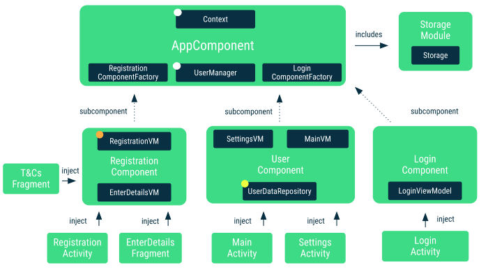
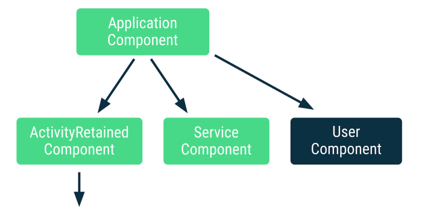

Hilt — Adding components to the hierarchy
Get more flexibility in Hilt by adding your own components to the hierarchy
Inserting a component in the middle of the Hilt component hierarchy is not possible. However, you can create a custom component with a Hilt component as a parent and access its scoped types using entry points. In the article, we’ll see what all this implies and how to add a custom component in the Dagger 2 codelab code.
The Dagger 2 codelab goes through adding Dagger to a multiple-Activity application. As the user can log in and out of the app, user information is handled in a Dagger component with a lifespan longer than activity components.
 Dagger components in the Dagger codelab app
In the diagram above, notice how MainActivity and SettingsActivity access the UserComponent with UserDataRepository scoped to it. The in-memory UserDataRepository handles information related to a logged-in user. When the user logs out, we want to remove the info from memory.
In Hilt and Dagger, every component must be held by an object (you can think of it as a lifecycle owner) that knows when the component needs to be created or destroyed. In our example, that class is UserManager that keeps track of logins and logouts. When the user logs in, a new component is created and when the user logs out, the component is destroyed. In that way, MainActivity and SettingsActivity can access the same instance of the component to get injected by it.
All components of this app except UserComponent can be mapped to Hilt’s standard components: AppComponent maps to Hilt’s ApplicationComponent while RegistrationComponent and LoginComponent map to ActivityComponent.
What can we do to make UserComponent more Hilt-friendly? We have different possibilities:
-
Scope
UserDataRepositoryto theApplicationComponentand handle nullability when the user is logged out. This is what the Migrating your Dagger app to Hilt codelab does. Not ideal, but could work in this case. However, it might add some tricky race conditions to deal with on a user switch. -
Make
MainActivityandSettingsActivityfragments, and have theUserDataRepositoryscoped to the activity (Hilt’sActivityRetainedComponent) where those fragments are used. This is a “doing stuff to fit the framework rather than the framework fitting the use case” sort of solution. This doesn’t even work for all situations as you might need to access user information in other places that aren’t tied to the activity like a broadcast receiver. -
Keep the same navigation structure and add the
UserComponentto be used by Hilt.
As an exercise to learn more about the flexibility of Hilt, let’s cover option 3 in this post: adding a component to the Hilt component hierarchy.
Hilt design decisions
Hilt is opinionated on its component hierarchy as it contains the most common set of components an Android app typically uses. Due to compatibility concerns and Hilt not knowing how to create your component (e.g. what userId to use), it’s not possible to insert a component between the layers (e.g. making a custom component X subcomponent of ApplicationComponent, and parent of ActivityRetainedComponent).
What is possible is adding a component to the hierarchy as a leaf component. In our case, we could make our custom component UserComponent to be a subcomponent of ApplicationComponent as seen in the image.
 Adding a subcomponent of ApplicationComponent to the Hilt hierarchy
The use case in this article consists of adding a custom component (i.e.
UserComponent) to the hierarchy that hasApplicationComponentas a parent. However, as we’ll see later, you can make your custom component extend any Component you want, either a predefined Hilt component or your own other custom one.
The main difference between inserting and adding a component is that if you insert a component in the hierarchy, its scoped bindings are available in its subcomponents (components below in the hierarchy) whereas if you add a component, they won’t. You could make those scoped bindings flow down (or being available in) the hierarchy if you create your own hierarchy parallel to Hilt’s one. However, that’d make you lose the @AndroidEntryPoint functionality and you’d have to use entry points to obtain dependencies in Android framework classes.
As we’ll be adding a component to the hierarchy in our example, we won’t have UserDataRepository (UserComponent’s scoped type) available as a binding in @AndroidEntryPoint classes, so we won’t be able to inject it as any other scoped type:
@Singleton
class AnalyticsRepository @Inject constructor(/*...*/) { /* ... */ }
class MainActivityAnalyticsAdapter @Inject constructor(
// AnalyticsRepository is available as it's scoped to ApplicationComponent
analyticsRepository: AnalyticsRepository,
// 💥 Build time error!
// UserDataRepository is NOT available to Hilt in MainActivity as the binding
// is not available in ActivityComponent, it's in UserComponent and it's not
// propagated down the Hilt components hierarchy
userDataRepository: UserDataRepository
) { /* ... */ }
We’ll see later what are the different options to obtain the scoped instance of UserDataRepository in our classes.
Adding a component to the hierarchy
As shown in the custom components docs, you can declare a component using the @DefineComponent annotation.
// Annotation for scoping to UserComponent
@Scope
@MustBeDocumented
@Retention(value = AnnotationRetention.RUNTIME)
annotation class LoggedUserScope
// Types scoped to this component must be annotated with @LoggedUserScope
@LoggedUserScope
// Make UserComponent subcomponent of ApplicationComponent
@DefineComponent(parent = ApplicationComponent::class)
interface UserComponent {
// Builder to create instances of UserComponent
@DefineComponent.Builder
interface Builder {
fun setUser(@BindsInstance user: User): UserComponent.Builder
fun build(): UserComponent
}
}
We made UserComponent a subcomponent of ApplicationComponent as specified in the parent parameter of the @DefineComponent annotation. Additionally, we created the @LoggedUserScope to be able to scope types to UserComponent. Use the builder annotated with @DefineComponent.Builder to create instances of UserComponent, as you’ll see later, this is what UserManager will be using.
Use
@DefineComponentto define a new custom component you can use in your app. It takes in the parent component as a parameter. The new component will extend the parent component meaning that all parent bindings will be available in the new component. Because of our the specific use case for this blog post, we used Hilt’sApplicationComponent, however, you can make it extend any component you want: it could be a Hilt component or any other custom component you already have defined.
With this, we can scope types to this component already:
@LoggedUserScope
class UserDataRepository @Inject constructor(/*...*/) {/* ... */}
Managing the lifecycle of the component
A class scoped higher up in the components hierarchy should be responsible for the lifecycle of this component. In our case, this class is UserManager which is scoped to the ApplicationComponent.
As UserManager needs to know how to create instances of UserComponent, it should receive its builder in the constructor. As UserComponent is a subcomponent of ApplicationComponent, the builder is available as a binding in there.
@Singleton
class UserManager @Inject constructor(
// Since UserManager will be in charge of managing the UserComponent's
// lifecycle, it needs to know how to create instances of it. We use the
// provider (i.e. factory) Dagger generates for us to create instances of UserComponent.
private val userComponentProvider: Provider<UserComponent.Builder>
) {
/**
* UserComponent is specific to a logged in user. Holds an instance of
* UserComponent. This determines if the user is logged in or not, when the
* user logs in, a new Component will be created.
* When the user logs out, this will be null.
*/
var userComponent: UserComponent? = null
private set
...
private fun userLoggedIn(userId: String) {
// When the user logs in, we create a new instance of UserComponent
val user = createUser(userId)
userComponent = userComponentProvider.get().setUser(user).build()
}
private fun logout() {
// When the user logs out, we remove the instance of UserComponent from memory
userComponent = null
}
}
Accessing the scoped bindings
You can access the scoped bindings of UserComponent with entry points. For our case, we can create an entry point exposing the UserDataRepository:
@InstallIn(UserComponent::class)
@EntryPoint
interface UserComponentEntryPoint {
fun userDataRepository(): UserDataRepository
}
You can access this entry point by using an instance of UserComponent:
@AndroidEntryPoint
class MainActivity : AppCompatActivity() {
// Injected by ActivityComponent
@Inject lateinit var userManager: UserManager
// Populated by UserComponent
private lateinit var userDataRepository: UserDataRepository
override fun onCreate(savedInstanceState: Bundle?) {
super.onCreate(savedInstanceState)
userDataRepository = EntryPoints.get(
userManager.userComponent, UserComponentEntryPoint::class.java
).userDataRepository()
// Do something with userDataRepository
}
}
Caveats
There are some caveats to the code we’ve seen so far:
-
Scoped types in custom components don’t flow down the Hilt components hierarchy. That’s why you need to use entry points and you cannot have it as a dependency of another class unless you use AssistedInject as shown in this example.
-
This is not a full login/user solution as this setup works when the user explicitly logs in and out of the app. If your app allows switching accounts while on the same screen, then you’d need to manually restart the activity/fragment when that happens. Alternatively, you could add a callback to
UserManagerto know when an account has changed to update the information on the screen accordingly.
Even though inserting a component in the middle of the Hilt component hierarchy is not possible, you can create a component with a Hilt component as a parent and access its scoped types using entry points.